knitr::include_graphics("Assets/decTree4HypertensionNew.png")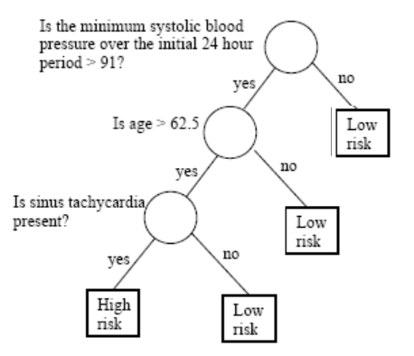
A bank needs to have a way to decide if/when a customer can be granted a loan.
A doctor may need to decide if a patient has to undergo a surgery or a less aggressive treatment.
A company may need to decide about investing in new technologies or stay with the traditional ones.
In all those cases a decision tree may provide a structured approach to decision-making that is based on data and can be easily explained and justified.
Decisions are often based on asking several questions on available information whose answers induce binary splits on data that end up with some grouping or classification.
knitr::include_graphics("Assets/decTree4HypertensionNew.png")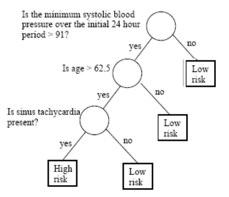
A decision tree is a graphical representation of a series of decisions and their potential outcomes.
It is obtained by recursively stratifying or segmenting the feature space into a number of simple regions.
Each region (decision) corresponds to a node in the tree, and each potential outcome to a branch.
The tree structure can be used to guide decision-making based on data.
We need context:
When is it appropriate to rely on decision trees?
When would other approaches be preferable?
What type of decision trees can be used?
We need to know how to build good trees
Decision trees are non parametric, data guided predictors, well suited in many situations such as:
They are not so appropriate for complex datasets, or complex problems, that require expert knowledge.
Classification Trees are built when the response variable is categorical.
Regression Trees are used when the response variable is numerical.
| Package | Algorithm | Dataset size | Missing data handling | Ensemble methods | Visual repr | User interface |
|---|---|---|---|---|---|---|
scikit-learn |
CART (DecisionTreeClassifier) | Small to large | Can handle NaN | Yes | Yes (using Graphviz) | Simple |
dtreeviz |
CART (DecisionTree) | Small to large | Can handle NaN | No | Yes | Simple |
xgboost |
Gradient Boosting | Medium to large | Requires imputation | Yes | No | Complex |
lightgbm |
Gradient Boosting | Medium to large | Requires imputation | Yes | No | Complex |
data("PimaIndiansDiabetes2", package = "mlbench")
dplyr::glimpse(PimaIndiansDiabetes2)Rows: 768
Columns: 9
$ pregnant <dbl> 6, 1, 8, 1, 0, 5, 3, 10, 2, 8, 4, 10, 10, 1, 5, 7, 0, 7, 1, 1…
$ glucose <dbl> 148, 85, 183, 89, 137, 116, 78, 115, 197, 125, 110, 168, 139,…
$ pressure <dbl> 72, 66, 64, 66, 40, 74, 50, NA, 70, 96, 92, 74, 80, 60, 72, N…
$ triceps <dbl> 35, 29, NA, 23, 35, NA, 32, NA, 45, NA, NA, NA, NA, 23, 19, N…
$ insulin <dbl> NA, NA, NA, 94, 168, NA, 88, NA, 543, NA, NA, NA, NA, 846, 17…
$ mass <dbl> 33.6, 26.6, 23.3, 28.1, 43.1, 25.6, 31.0, 35.3, 30.5, NA, 37.…
$ pedigree <dbl> 0.627, 0.351, 0.672, 0.167, 2.288, 0.201, 0.248, 0.134, 0.158…
$ age <dbl> 50, 31, 32, 21, 33, 30, 26, 29, 53, 54, 30, 34, 57, 59, 51, 3…
$ diabetes <fct> pos, neg, pos, neg, pos, neg, pos, neg, pos, pos, neg, pos, n…library(magrittr)
descAll <- as.data.frame(skimr::skim(PimaIndiansDiabetes2))
desc <- descAll[,c(10:15)]
rownames(desc) <- descAll$skim_variable
colnames(desc) <- colnames(desc) %>% stringr::str_replace("numeric.", "")
descWe wish to predict the probability of individuals in being diabete-positive or negative.
library(rpart)
model1 <- rpart(diabetes ~., data = PimaIndiansDiabetes2)plot(model1)
text(model1, digits = 3, cex=0.7)model1n= 768
node), split, n, loss, yval, (yprob)
* denotes terminal node
1) root 768 268 neg (0.65104167 0.34895833)
2) glucose< 127.5 485 94 neg (0.80618557 0.19381443)
4) age< 28.5 271 23 neg (0.91512915 0.08487085) *
5) age>=28.5 214 71 neg (0.66822430 0.33177570)
10) insulin< 142.5 164 48 neg (0.70731707 0.29268293)
20) glucose< 96.5 51 4 neg (0.92156863 0.07843137) *
21) glucose>=96.5 113 44 neg (0.61061947 0.38938053)
42) mass< 26.35 19 0 neg (1.00000000 0.00000000) *
43) mass>=26.35 94 44 neg (0.53191489 0.46808511)
86) pregnant< 5.5 49 15 neg (0.69387755 0.30612245)
172) age< 34.5 25 2 neg (0.92000000 0.08000000) *
173) age>=34.5 24 11 pos (0.45833333 0.54166667)
346) pressure>=77 10 2 neg (0.80000000 0.20000000) *
347) pressure< 77 14 3 pos (0.21428571 0.78571429) *
87) pregnant>=5.5 45 16 pos (0.35555556 0.64444444) *
11) insulin>=142.5 50 23 neg (0.54000000 0.46000000)
22) age>=56.5 12 1 neg (0.91666667 0.08333333) *
23) age< 56.5 38 16 pos (0.42105263 0.57894737)
46) age>=33.5 29 14 neg (0.51724138 0.48275862)
92) triceps>=27 22 8 neg (0.63636364 0.36363636) *
93) triceps< 27 7 1 pos (0.14285714 0.85714286) *
47) age< 33.5 9 1 pos (0.11111111 0.88888889) *
3) glucose>=127.5 283 109 pos (0.38515901 0.61484099)
6) mass< 29.95 75 24 neg (0.68000000 0.32000000) *
7) mass>=29.95 208 58 pos (0.27884615 0.72115385)
14) glucose< 157.5 116 46 pos (0.39655172 0.60344828)
28) age< 30.5 50 23 neg (0.54000000 0.46000000)
56) pressure>=73 29 10 neg (0.65517241 0.34482759)
112) mass< 41.8 20 4 neg (0.80000000 0.20000000) *
113) mass>=41.8 9 3 pos (0.33333333 0.66666667) *
57) pressure< 73 21 8 pos (0.38095238 0.61904762) *
29) age>=30.5 66 19 pos (0.28787879 0.71212121) *
15) glucose>=157.5 92 12 pos (0.13043478 0.86956522) *plot(model1)
text(model1, digits = 3, cex=0.7)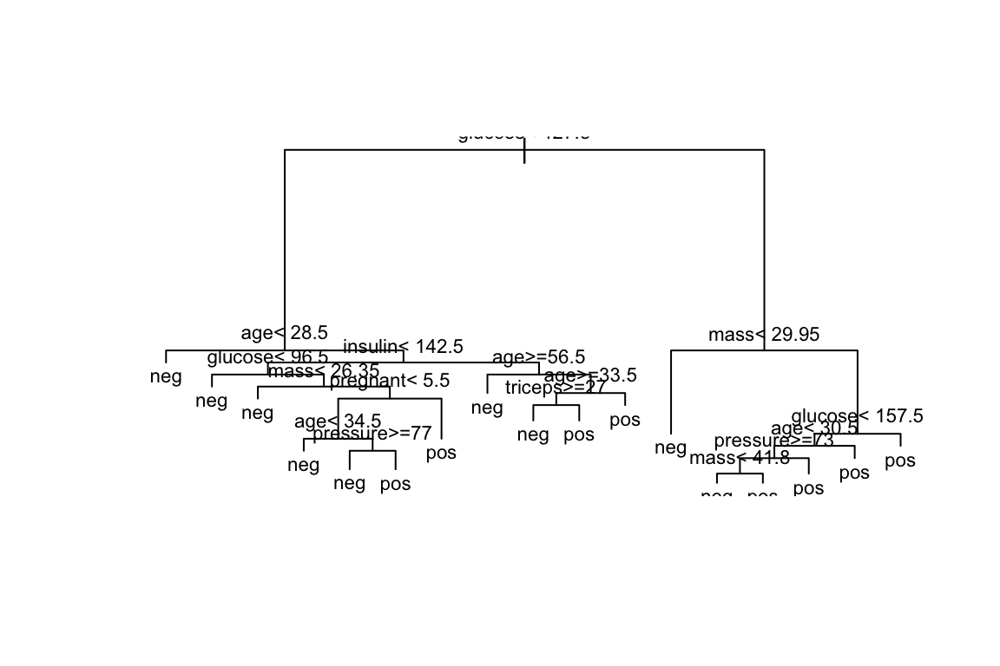
require(rpart.plot)
rpart.plot(model1, cex=.7)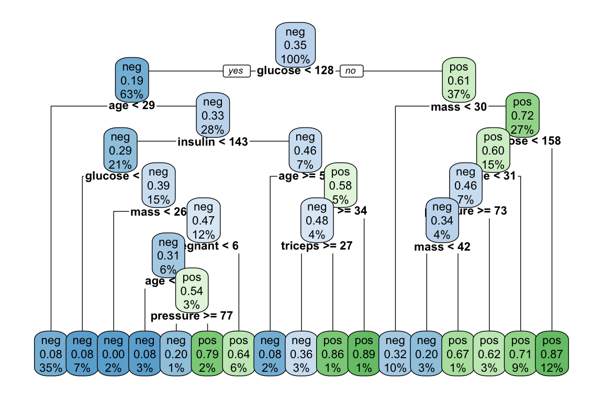
rpart.plot package.Each node shows: (1) the predicted class (‘neg’ or ‘pos’), (2) the predicted probability, (3) the percentage of observations in the node.
Consider individuals 521 and 562
(aSample<- PimaIndiansDiabetes2[c(521,562),])predict(model1, aSample, "class")521 562
neg pos
Levels: neg posIf we follow individuals 521 and 562 along the tree, we reach the same prediction.
The tree provides not only a classification but also an explanation.
predicted.classes<- predict(model1, PimaIndiansDiabetes2, "class")
mean(predicted.classes == PimaIndiansDiabetes2$diabetes)[1] 0.8294271The question becomes harder when we go back and ask if we obtained the best possible tree.
In order to answer this question we must study tree construction in more detail.
As with any model, we aim not only at construting trees.
We wish to build good trees and, if possible, optimal trees in some sense we decide.
In order to build good trees we must decide
How to construct a tree?
How to optimize the tree?
How to evaluate it?
Classification / Regression: Supervised Learning tasks:
There is a learning set \(\mathcal{L}=\{(\mathbf{X_i,Y_i})\}_{i=1}^n\)
And depending of \(\mathbf{Y}\) we have:
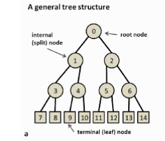 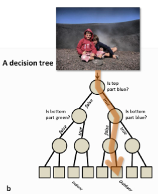
A node is denoted by \(t\).
The collection of all nodes in the tree is denoted \(T\)
The collection of all the leaf nodes is denoted \(\tilde{T}\)
A split will be denoted by \(s\).
A binary decision tree is built by defining a series of (recursive) splits on the feature space.
The splits are decided in such a way that the associated learning task is attained
The ultimate goal of the tree is to be able to use a combination of the splits to accomplish the learning task with as small an error as possible.
A tree represents a recursive splitting of the space.
In the end, every leaf node is assigned with a class and a test point is assigned with the class of the leaf node it lands in.
knitr::include_graphics("Assets/splits_nodes_1.png")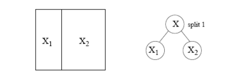
knitr::include_graphics("Assets/splits_nodes_2.png")
knitr::include_graphics("Assets/splits_nodes_3.png")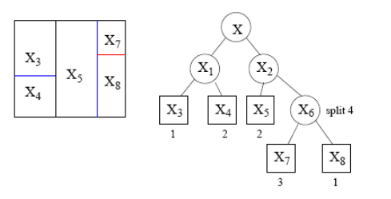
knitr::include_graphics("Assets/1.1-DecisionTrees-Slides_insertimage_3.png")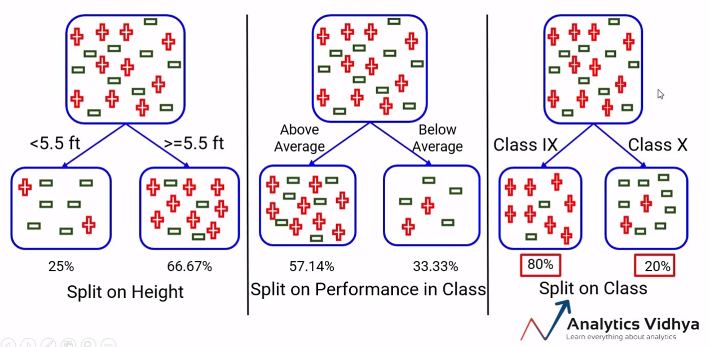
Some ways perform better than other for a given task, but rarely will they be perfect.
So we aim at combining splits to find a better rule.
Tree building involves the following three elements:
The selection of the splits, i.e., how do we decide which node (region) to split and how to split it?
If we know how to make splits (‘grow’ the tree), how do we decide when to declare a node terminal and stop splitting?
How do we assign each terminal node to a class?
To build a Tree, questions have to be generated that induce splits based on the value of a single variable.
Ordered variable \(X_j\):
Categorical variables, \(X_j \in \{1, 2, \ldots, M\}\):
The pool of candidate splits for all \(p\) variables is formed by combining all the generated questions.
The way we choose the split, is to measure every split by a ‘goodness of split’ measure, which depends on:
Goodness of split is measured by impurity functions.
Intuitively, when we split the points we want the region corresponding to each leaf node to be “pure”, that is, most points in this region come from the same class, that is, one class dominates.
knitr::include_graphics("Assets/BadSplit.png")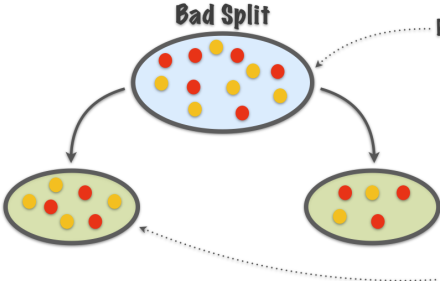
Purity not increased
knitr::include_graphics("Assets/GoodSplit.png")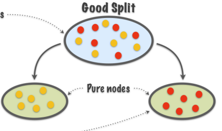
Purity increased
In order to measure homogeneity,or as called here, purity, of splits we introduce
Used to measure the extent of purity for a region containing data points from possibly different classes.
An impurity function is a function \(\Phi\) defined on the set of all \(K\)-tuples of numbers \(\mathbf{p}= \left(p_{1}, \cdots, p_{K}\right)\) s.t. \(p_{j} \geq 0, \, \sum_{j=1}^K p_{j}=1\), \[ \Phi: \left(p_{1}, \cdots, p_{K}\right) \rightarrow [0,1] \]
with the properties:
\(\Phi_E (\mathbf{p}) = -\sum_{j=1}^K p_j\log (p_j)\) (Entropy).
\(\Phi_G (\mathbf{p}) = 1-\sum_{j=1}^K p_j^2\). (Gini Index).
\(\Phi_M (\mathbf{p}) = \sum_{i=1}^K p_j(1-p_j)\) (Misclassification rate).
Node impurity functions for the two-class case. - The entropy function (rescaled) is the red curve, the Gini index is the green curve, and the resubstitution estimate of the misclassification rate is the blue curve.
\[ i(t)=\phi(p(1 \mid t), p(2 \mid t), \ldots, p(K \mid t)) \] - That is, the impurity measure of a split (or a node) is the impurity function when computed on probabilities associated (conditional) with a node.
\[ \Phi(s, t)=\Delta i(s, t)=i(t)-p_{R} i\left(t_{R}\right)-p_{L} i\left(t_{L}\right) \]
The impurity, \(i(t)\), of a node is based solely on the estimated posterior probabilities of the classes
This is done by the impurity score of \(t\), defined as \(I(t)=i(t)\cdot p(t)\), a weighted impurity measure of node \(t\) that takes into account:
The estimated posterior probabilities of the classes,
The estimated proportion of data that go to node \(t\).
\[ H(t)=-\sum_{i=1}^{n} P\left(t_{i}\right) \log _{2} P\left(t_{i}\right) \]
From here, an information gain (that is impurity decrease) measure can be introduced.
Information theoretic approach that compares
\[ \begin{aligned} & IG(t, s)=\text { (original entr.) }-(\text { entr. after split) } \\ & IG(t, s)=H(t)-\sum_{i=1}^{n} \frac{\left|t_{i}\right|}{t} H\left(x_{i}\right) \end{aligned} \]
Consider the problem of designing an algorithm to automatically differentiate between apples and pears (class labels) given only their width and height measurements (features).
| Width | Height | Fruit |
|---|---|---|
| 7.1 | 7.3 | Apple |
| 7.9 | 7.5 | Apple |
| 7.4 | 7.0 | Apple |
| 8.2 | 7.3 | Apple |
| 7.6 | 6.9 | Apple |
| 7.8 | 8.0 | Apple |
| 7.0 | 7.5 | Pear |
| 7.1 | 7.9 | Pear |
| 6.8 | 8.0 | Pear |
| 6.6 | 7.7 | Pear |
| 7.3 | 8.2 | Pear |
| 7.2 | 7.9 | Pear |
knitr::include_graphics("Assets/Example2-EntropyCalculation.png")
knitr::include_graphics("Assets/Example2-IGCalculation.png")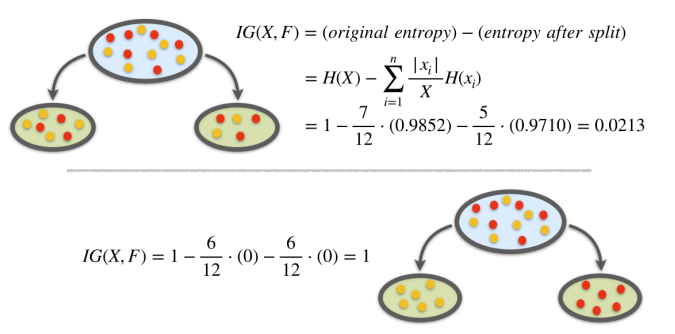
The decision tree classifies new data points as follows.
We let a data point pass down the tree and see which leaf node it lands in.
The class of the leaf node is assigned to the new data point. Basically, all the points that land in the same leaf node will be given the same class.
This is similar to k-means or any prototype method.
\[ \kappa(t)=\arg \max _{j} p(j \mid t) \]
Let’s assume we have built a tree and have the classes assigned for the leaf nodes.
Goal: estimate the classification error rate for this tree.
We use the resubstitution estimate \(r(t)\) for the probability of misclassification, given that a case falls into node \(t\). This is:
\[ r(t)=1-\max _{j} p(j \mid t)=1-p(\kappa(t) \mid t) \]
Denote \(R(t)=r(t) p(t)\), that is the miscclassification error rate weighted by the probability of the node.
The resubstitution estimation for the overall misclassification rate \(R(T)\) of the tree classifier \(T\) is:
\[ R(T)=\sum_{t \in \tilde{T}} R(t) \]
Maximizing information gain is one possible criteria to choose among splits.
In order to avoid excessive complexity it is usually decided to stop splitting when information gain does not compensate for increase in complexity.
Trees obtained by looking for optimal splits tend to overfit: good for the data in the tree, but generalize badly and tend to fail more in predictions.
In order to reduce complexity and overfitting,
while keeping the tree as good as possible, tree pruning may be applied.
Pruning works removing branches that are unlikely to improve the accuracy of the model on new data.
\[ R_\alpha(T) =R(T)+\alpha|T| \] where \(\alpha\) is the parameter that controls the trade-off between tree complexity and accuracy.
Start by building a large tree that overfits the data.
Then, use cross-validation to estimate the optimal value of alpha that minimizes the generalization error.
Finally, prune the tree by removing the branches that have a smaller improvement in impurity than the penalty term multiplied by alpha.
Iterate the process until no more branches can be pruned, or until a minimum tree size is reached.
When the response variable is numeric, decision trees are regression trees.
Option of choice for distinct reasons
| Aspect | Regression Trees | Classification Trees |
|---|---|---|
| Outcome var. type | Continuous | Categorical |
| Goal | To predict a numerical value | To predict a class label |
| Splitting criteria | Mean Squared Error, Mean Abs. Error | Gini Impurity, Entropy, etc. |
| Leaf node prediction | Mean or median of the target variable in that region | Mode or majority class of the target variable ... |
| Examples of use cases | Predicting housing prices, predicting stock prices | Predicting customer churn, predicting high/low risk in diease |
| Evaluation metric | Mean Squared Error, Mean Absolute Error, R-square | Accuracy, Precision, Recall, F1-score, etc. |
airquality dataset from the datasets package contains daily air quality measurements in New York from May through September of 1973 (153 days).aq <- datasets::airquality
color <- adjustcolor("forestgreen", alpha.f = 0.5)
ps <- function(x, y, ...) { # custom panel function
panel.smooth(x, y, col = color, col.smooth = "black", cex = 0.7, lwd = 2)
}
pairs(aq, cex = 0.7, upper.panel = ps, col = color)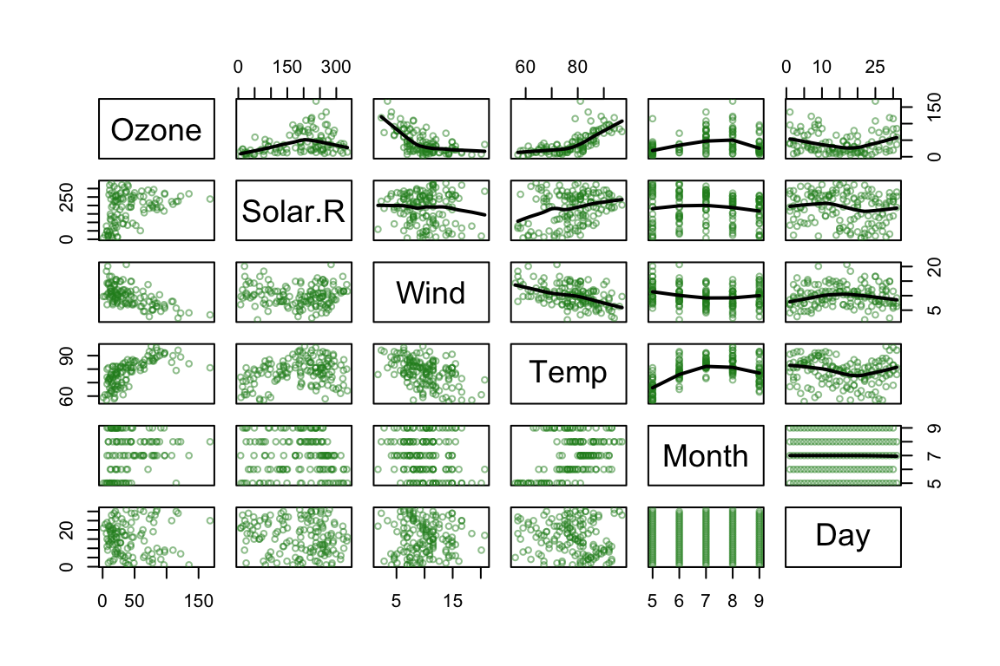
\[ \sum_{j=1}^J \sum_{i \in R_j}\left(y_i-\hat{y}_{R_j}\right)^2 \]
where \(\hat{y}_{R_j}\) is the mean response for the training observations within the \(j\) th box.
\[ R_1(j, s)=\left\{X \mid X_j<s\right\} \text { and } R_2(j, s)=\left\{X \mid X_j \geq s\right\} \]
and seek the value of \(j\) and \(s\) that minimize the equation:
\[ \sum_{i: x_i \in R_1(j, s)}\left(y_i-\hat{y}_{R_1}\right)^2+\sum_{i: x_i \in R_2(j, s)}\left(y_i-\hat{y}_{R_2}\right)^2. \]
Once the regions have been created we predict the response using the mean of the trainig observations in the region to which that observation belongs.
In the example, for an observation belonging to the shaded region, the prediction would be:
\[ \hat{y} =\frac{1}{4}(y_2+y_3+y_5+y_9) \]
knitr::include_graphics("Assets/RegressionTree-Prediction1.png")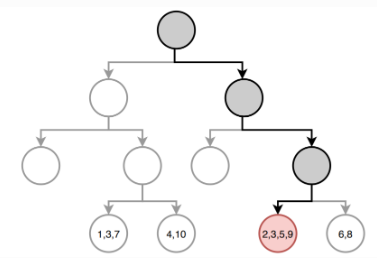
set.seed(123)
train <- sample(1:nrow(aq), size = nrow(aq)*0.7)
aq_train <- aq[train,]
aq_test <- aq[-train,]
aq_regresion <- tree::tree(formula = Ozone ~ .,
data = aq_train, split = "deviance")
summary(aq_regresion)
Regression tree:
tree::tree(formula = Ozone ~ ., data = aq_train, split = "deviance")
Variables actually used in tree construction:
[1] "Temp" "Wind" "Solar.R" "Day"
Number of terminal nodes: 8
Residual mean deviance: 285.6 = 21420 / 75
Distribution of residuals:
Min. 1st Qu. Median Mean 3rd Qu. Max.
-58.2000 -7.9710 -0.4545 0.0000 5.5290 81.8000 par(mar = c(1,1,1,1))
plot(x = aq_regresion, type = "proportional")
text(x = aq_regresion, splits = TRUE, pretty = 0, cex = 0.8, col = "firebrick")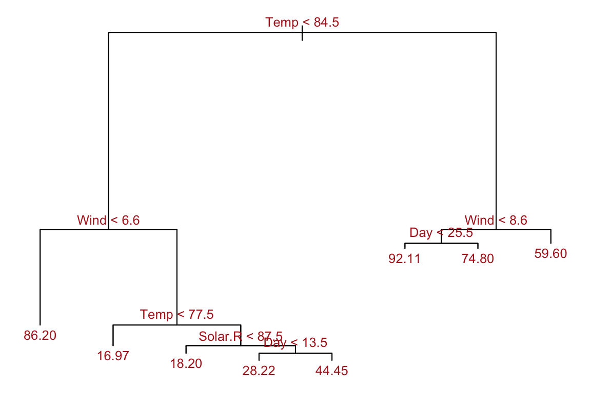
\[ \sum_{m=1}^{|T|} \sum_{y_i \in R_m} \left(y_i -\hat{y}_{R_m}\right)^2+ \alpha|T|\quad (*) \label{prunning} \]
is as small as possible.
Use recursive binary splitting to grow a large tree on the training data, stopping only when each terminal node has fewer than some minimum number of observations.
Apply cost complexity pruning to the large tree in order to obtain a sequence of best subtrees, as a function of \(\alpha\).
Use K-fold cross-validation to choose \(\alpha\). That is, divide the training observations into \(K\) folds. For each \(k=1, \ldots, K\) :
Average the results for each value of \(\alpha\). Pick \(\alpha\) to minimize the average error.
cv_aq <- tree::cv.tree(aq_regresion, K = 5)
optimal_size <- rev(cv_aq$size)[which.min(rev(cv_aq$dev))]
aq_final_tree <- tree::prune.tree(
tree = aq_regresion,
best = optimal_size
)
summary(aq_final_tree)
Regression tree:
tree::tree(formula = Ozone ~ ., data = aq_train, split = "deviance")
Variables actually used in tree construction:
[1] "Temp" "Wind" "Solar.R" "Day"
Number of terminal nodes: 8
Residual mean deviance: 285.6 = 21420 / 75
Distribution of residuals:
Min. 1st Qu. Median Mean 3rd Qu. Max.
-58.2000 -7.9710 -0.4545 0.0000 5.5290 81.8000 In this example pruning does not improve the tree.
Trees are very easy to explain to people.
Decision trees may be seen as good mirrors of human decision-making.
Trees can be displayed graphically, and are easily interpreted even by a non-expert.
Trees can easily handle qualitative predictors without the need to create dummy variables.
Trees generally do not have the same level of predictive accuracy as sorne of the other regression and classification approaches.
Additionally, trees can be very non-robust: a small change in the data can cause a large change in the final estimated tree.
Efron, B., Hastie T. (2016) Computer Age Statistical Inference. Cambridge University Press. Web site
Hastie, T., Tibshirani, R., & Friedman, J. (2009). The elements of statistical learning: Data mining, inference, and prediction. Springer.
James, G., Witten, D., Hastie, T., & Tibshirani, R. (2013). An introduction to statistical learning (Vol. 112). Springer. Web site
Breiman, L., Friedman, J., Stone, C. J., & Olshen, R. A. (1984). Classification and regression trees. CRC press.
Brandon M. Greenwell (202) Tree-Based Methods for Statistical Learning in R. 1st Edition. Chapman and Hall/CRC DOI: https://doi.org/10.1201/9781003089032
Genuer R., Poggi, J.M. (2020) Random Forests with R. Springer ed. (UseR!)